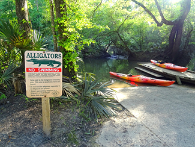
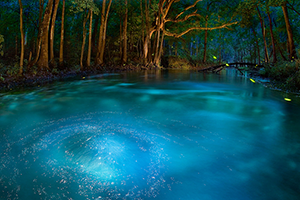
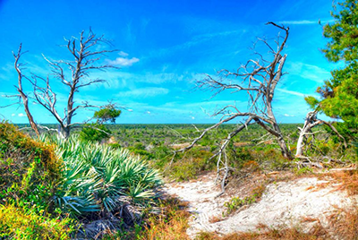

Are you ready to see some crazy state parks?
Because Florida has some that will blow your mind!
If they're still around, that is.
See them while they last :\
Some also have questionable names, but people may think
differently.
Make sure not to bring any explosives as they are not permitted
in the parks. Unless you like being arrested and convicted.
Florida State Parks
Florida Caverns State Park

Cool air, the sound of dripping water, a visual array of
mystifying stalactites, stalagmites, flowstones and draperies -
this is what greets visitors when they explore the otherworldly
depths of Florida Caverns. Florida Caverns offers visitors a
rarity in the state, a chance to explore stunning caves. While
moving between the large underground rooms, one can observe the
many chisel marks made by 1930s-era Civilian Conservation Corps
workers. These hard-working men enlarged the cave passageways
by hand so visitors could stand upright during the guided
tours. They also built the park’s spacious visitor center.
We are excited to welcome everyone to visit the awe-inspiring
splendor of Florida Caverns State Park. This is one of the
few state parks with dry (air-filled) caves and is the only
state park in Florida to offer cave tours to the public. The
Florida Cavern has dazzling formations of limestone stalactites,
stalagmites, soda straws, flowstones and draperies. The Chipola
River and Blue Hole spring provide areas for fishing, canoeing
and boating. Florida Caverns State Park is popular for camping,
picnicking, fishing, hiking, and horseback riding. The park
does not rent horses, however stables are available for
equestrian enthusiasts. The park also features a nine-hole,
New Deal-era golf course set in beautiful rolling terrain.
The entrance is adjacent to the main park entrance; contact
the Florida Caverns Golf Course at (850) 526-1148. Guided cave
tours are offered year round except Thanksgiving and Christmas.
Guided tours of the Florida Cavern lasts 45 minutes and is
considered to be moderately strenuous. An audiovisual program
about touring the cave and other natural areas of the park is available in the visitor center. Camping
reservations may be made by visiting ReserveAmerica.com or by calling Reserve America at (800) 326-3521, TDD
(888) 433-0287.
Ichetucknee Springs State Park

Traveling the pristine waters of the Ichetucknee River is the perfect outing, whether you’re looking for a
vigorous adventure or a relaxing day on the water. Although well-known for its warm weather tubing,
Ichetucknee
Springs State Park is a 2,669-acre wildlife haven where beaver, otter, gar, softshell turtle, wild turkey,
wood
duck and limpkin all find a home. The main draw is the park’s eight major crystal-clear springs that join to
create the 6-mile Ichetucknee River. The upper portion within the state park is a National Natural Landmark,
perhaps the most pristine spring run in the state and best enjoyed by canoe or kayak during the cooler
months.
Three nature trails guide visitors through the lush park forest or a majestic sandhill environment with
towering
longleaf pines. Many visitors at Ichetucknee Springs State Park are surprised by the sheer amount of
wildlife
and diversity that is to be found here. It is easy to believe that the park is a crown jewel of the Florida
Park
Service, not only because of its fantastic tubing and river access, but also because of the pristine
habitats
and classification as one of the 15 largest spring groups in the state. On any given day, you might hear the
hoot of an owl far overhead, smell the fresh scent of the plants after a rainstorm or enjoy the sight of
turtles
jockeying for position on the best log in the river.
Jonathan Dickinson State Park

Sixteen distinct natural communities create the mosaic that is Jonathan Dickinson, the largest state park in
Southeast Florida. Rare environments such as coastal sand hills, upland lakes and scrub forests as well as
the
pristine Loxahatchee River make this park a unique spot to explore on land or by water. Historical interests
include a secret World War II training camp, the story of the shipwrecked Quaker merchant who is the park’s
namesake, and Trapper Nelson, the legendary Wild Man of the Loxahatchee. Ranger-guided tours of Trapper
Nelson’s
1930s pioneer homestead are available year-round. Visitors can enjoy paved and off-road biking, equestrian
and
hiking trails. Boating, canoeing and kayaking along the river are also great ways to enjoy the park. Anglers
can
fish along the riverbank or from a boat. The nature and history of the park come to life through exhibits
and
displays in the Elsa Kimbell Environmental Education and Research Center. Programs for kids or the whole
family
are also offered here. Sign up for our friends group e-newsletter to learn more about programs and events.
Nestled in the heart of South Florida, Jonathan Dickinson State Park is a haven of natural beauty and rich
history. As a dedicated non-profit organization, The Friends of Jonathan Dickinson State Park are committed
to
preserving this precious ecosystem for future generations. Our efforts focus on enhancing the park’s natural
and
cultural resources through community engagement, educational programs, and conservation initiatives. Every
visit, every membership, and every donation contributes to vital conservation projects and educational
outreach.
Whether you’re hiking our scenic trails, enjoying a kayak ride on the Loxahatchee River, or participating in
one
of our many events like FireFest, your involvement directly supports our mission. Explore how you can make a
difference—join us as a member, volunteer, or donor and be a part of preserving one of Florida's most
treasured
landscapes.